Building rock
solid software
in the real world
Improving team
workflow to
improve your
software
Omni Adams
@omnicolor
Mashery
https://joind.in/10548
- My name is Omni Adams
- Find me on the Twitter as omnicolor
- I build stuff at Mashery
Process matters
- This talk is about how to build better software as a team
- we're not perfect
- but we can be better
- catch things that go bump in the night much earlier
- → here's a typical workflow
Development cycle
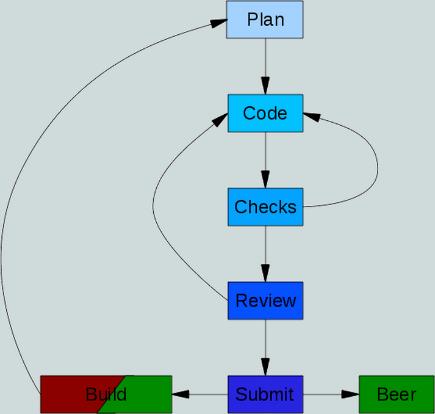
- workflow … for software's lifecycle
- you may or may not plan
- you write a bunch of code
- run automated checks and tests
- You may get a peer review
- then while CI builds it
- you get beer
- → this talk is not
Planning
- not … about planning
- Though obviously that's important
- nor is it about → coding
Coding
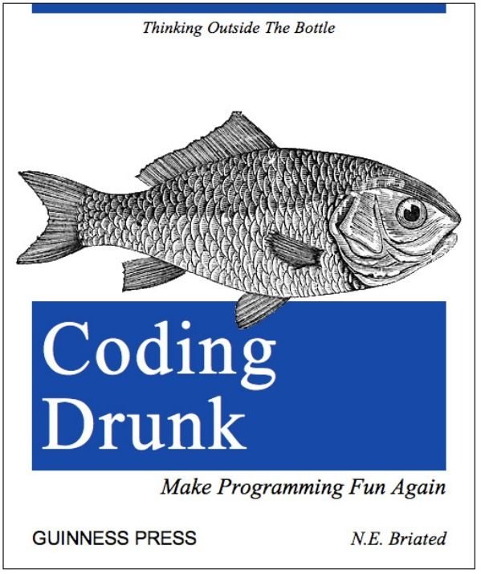
- … coding
- sure you're great coders
- don't need any help
- never make mistakes
- but I bet your team members do
- we'll talk about → automated checks
Automated checks

- automated checks … to do QA on code
- before it gets committed
- We'll talk quite a bit → about code reviews
Code reviews

- code reviews … your chance to head off facepalm code
- before it causes any damage
- we'll talk some about → submitting code
Submitting your code
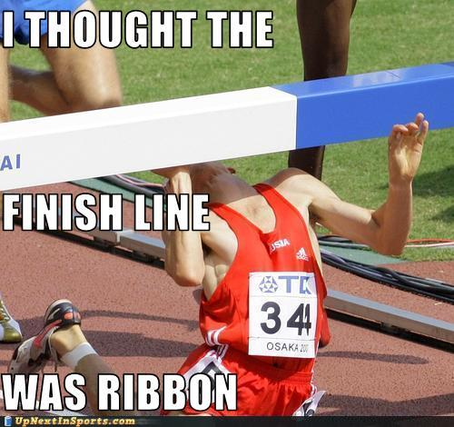
- submitting code … and possibly stopping it there
- if it doesn't meet standards
- and why submitting code is not the finish line
- and finally we'll talk about → what happens
After code is submitted

- what happens … after code gets submitted
- and what you can do at that point
Automated checks
- first up: automated checks
- Some things are easy to reject at this point
- failing tests or syntax errors for example
- most of these can also be run in your build
- This is basically HAL9000 saying → I'm sorry
Automated checks
sorry dave,
I can't let
you do that
- I'm sorry … Dave, I can't let you do that
Automated checks
- Lint
- PHPUnit
- PHP_CodeSniffer
- PHPMD
- PHPCPD
- PHPDCD
- Code coverage
- Here's an alphabet soup of checks you can run
- we'll go through these individually
- all of these help coders fix mistakes before they commit them
- We'll also then talk about when and how to run them
php -l
- PHP lint
- Bare minimum
- Finds syntax errors, or things that might cause a fatal error
<?php
// test.php
echo 'foo'
echo 'bar';
$ php -l test.php
Errors parsing test.php
$ php test.php
PHP Parse error: syntax error, unexpected 'echo' (T_ECHO), expecting ',' or ';' in test.php on line 3
- So if you lint the file it will tell you that you've got errors
- it doesn't tell you much more than that,
- but it doesn't execute the file
- so it can be run on destructive scripts
- It does however return a non-zero error code
- so you can use that to fail a script or a build
- A more rigorous tool for catching problems is → phpunit

- … PHPUnit
- the de facto standard for unit testing
- You could probably use simple test if you wanted
- Many talks about PHPunit at this conf and others
- so I'll gloss over testing
- lint and PHPunit should run pre-commit and on CI server
- everything else we talk about should be available to devs
- and run in CI for reporting
$ phpunit --colors tests
PHPUnit 3.7.28 by Sebastian Bergmann.
........................................ 63 / 315 ( 20%)
........................................ 126 / 315 ( 40%)
........................................ 189 / 315 ( 60%)
........................................ 252 / 315 ( 80%)
........................................ 315 / 315 (100%)
Time: 3.36 seconds, Memory: 6.75Mb
OK (315 tests, 348 assertions)
- Developers should be very used to seeing screens like this
- And tests should run very fast so developers have no excuses
- In this case, 315 tests in over 3 seconds is slow
- You should work to figure out why tests are slow
- If you install the → PHP_Invoker package
$ phpunit --strict --colors tests
PHPUnit 3.7.28 by Sebastian Bergmann.
.E...................................... 63 / 315 ( 20%)
........................................ 126 / 315 ( 40%)
........................................ 189 / 315 ( 60%)
........................................ 252 / 315 ( 80%)
........................................ 315 / 315 (100%)
Time: 1.42 seconds, Memory: 7.00Mb
There was 1 error:
1) CharacterTest::testSetArchetype
PHP_Invoker_TimeoutException: Execution aborted after 1 second
tests/CharacterTest.php:65
FAILURES!
Tests: 315, Assertions: 347, Errors: 1.
- … PHP_Invoker package
- You can add the strict flag which fails tests that take too long
- You can add a medium or large annotation to the test
- or fix the test to not take so long
- You can also use the group annotation to split your tests
- So long-running integration tests are split out
PHPCode_Sniffer
- Code sniffer
- statically analyzes code for "smells" or bad things
- like missing docblocks
- bad indentation
- braces in the wrong place
- most things in your style guide can be coded as a smell
$ phpcs skill.php
FILE: skill.php
----------------------------------------------------------
FOUND 9 ERROR(S) AND 1 WARNING(S) AFFECTING 4 LINE(S)
----------------------------------------------------------
4 | WARNING | PHP version not specified
4 | ERROR | Missing @category tag in file comment
4 | ERROR | Missing @package tag in file comment
4 | ERROR | Missing @author tag in file comment
50 | ERROR | Short PHP opening tag used with echo; expected "<?php echo
| | htmlentities ..." but found "<?= htmlentities ..."
52 | ERROR | Expected "foreach (...) {\n"; found "foreach (...) {"
52 | ERROR | Closing brace must be on a line by itself
----------------------------------------------------------
Time: 33 ms, Memory: 3.00Mb
- Here's what PHP code sniffer output might look like
- It's very configurable and you can write new sniffs
- We'll talk a bit about style guides more later as well
- next is → PHPMD
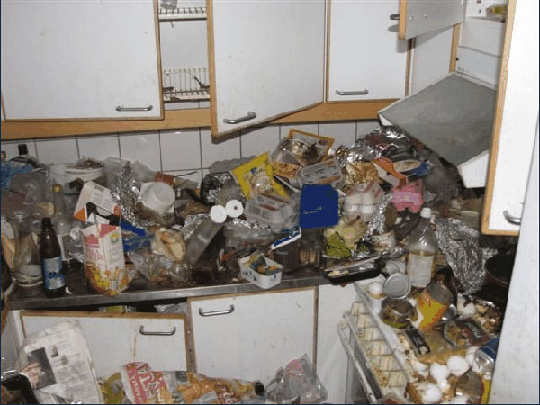
- … PHPMD
- The message detector
- bad language constructs, like eval and goto
- unused variables
- Excessive complexity
$ phpmd UnknownElement.php text design,codesize,cleancode
UnknownElement.php:72
Avoid using static access to class 'Task' in method
'maybeConfigure'.
UnknownElement.php:92
Avoid using static access to class 'BuildException' in
method 'main'.
UnknownElement.php:95
Avoid using static access to class 'Task' in method
'main'.
UnknownElement.php:118
Avoid using static access to class 'TaskAdapter' in
method 'handleChildren'.
- Here's an example of running a few default mess settings
- on a file from the Phing project
- Again, it's pretty easy to configure
- and you can suppress warnings if you disagree with them
- then there's the → PHPCPD
PHPCPD
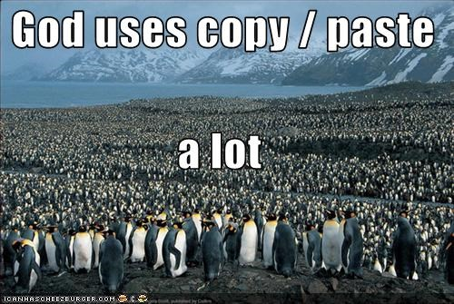
- … PHPCPD
- copy paste detector
- finds code blocks that are similar
- should be refactored so the common code is in one place
- keeps from having to remember to fix in all places
$ phpcpd .
phpcpd 2.0.0 by Sebastian Bergmann.
Found 1 exact clones with 20 duplicated lines in 1 files:
- tests/CharacterControllerTest.php:262-282
tests/CharacterControllerTest.php:312-332
0.55% duplicated lines out of 3651 total lines of code.
Time: 740 ms, Memory: 5.25Mb
- Here's an example of the output
- It's shows a small amount of code that could be refactored
- The tool can be configured with how much duplication is required
- before throwing a warning
- next is the → PHPDCD
PHPDCD
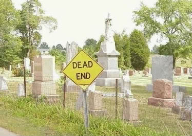
- … PHPDCD
- PHP dead code detector
- Limited tool, but useful in some cases
- it finds uncalled methods
- finally, there's → code coverage
<?php
if (false) {
echo 'This never runs';
}
function uncalled() {
echo 'Nothing calls this';
}
exit(0);
echo 'More uncalled code';
- Here's an example file with three types of dead code
- The conditional can't possibly fire
- There's a defined function that isn't called
- and there's code called after the exit
- The dead code detector will only flag the uncalled function
$ phpdcd test.php
phpdcd 1.0.1 by Sebastian Bergmann.
- uncalled()
LOC: 3, declared in test.php:7
Time: 20 ms, Memory: 3.00Mb
- Here's the output if we run PHPDCD on the example
- It flags that method
- You will want to exclude your test directory if you run this
- Since it doesn't handle the reflection magic very well
Code coverage
- … code coverage
- not really an automated check
- you may want to run as pre-flight check
- but shouldn't block submission
- moving on to → code reviews
Code reviews
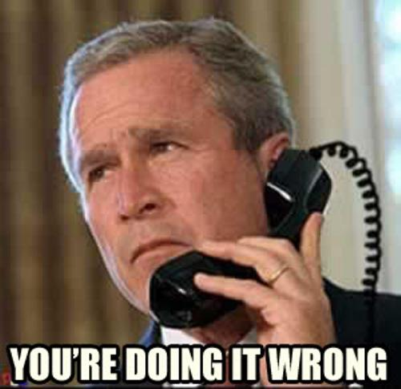
- … code reviews
- your chance to point out a coworker is doin it rong
- I've used two code review packages
- both are free as in speech and beer
- the first is → review board
Review Board
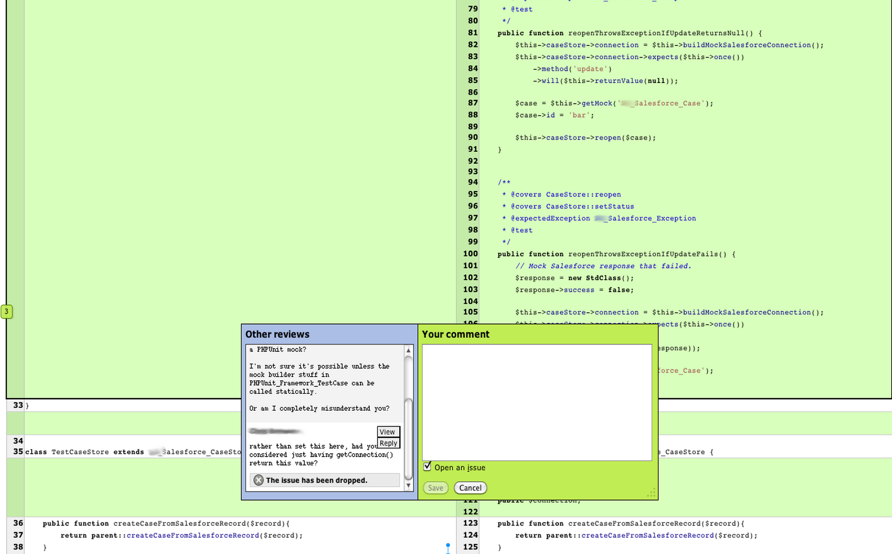
- … review board
- written in Python and Django
- pros:
- you host on your server
- code never leaves your network
- cons:
- You host it on your server
codereview.appspot.com
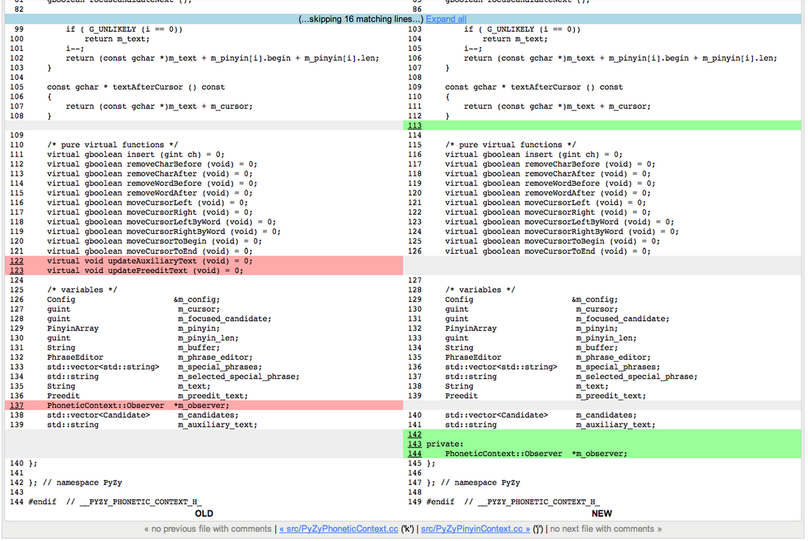
- codereview.appspot.com
- based on Mondrian used internally at Google
- written by Guido van Rossum, creator of Python
- you do have to upload to Google's servers
- there are 3 types of reviews → pre-review
Code reviews
- … pre-review
- which stops bad code from getting to production
- but can slow down development
- there's also → post-review
Code reviews
- … post-review
- where the bad code is already committed
-
- and can make it into production
- finally, there's → a team review with a projector
Code reviews

- … a team review with a projector
- you display code on a screen and let the whole team review
- this can really embarrass people
- and can split the team into us and them
- groupthink is a real possibility
- and junior team members can get really stressed
- → so what are you looking for?
Code reviews
What tools can't catch:
- Logic errors
- Off-by-one errors
- Obvious performance problems
- Refactoring opportunities
- Bad/misleading documentation
What tools missed:
- Style problems
- Syntax errors
- Typos
- Unreachable code
- Useless tests
- Missing tests
- anything the tools couldn't catch
- logic errors (like ifs that don't make sense)
- loops with off-by-one issues
- performance problems (SQL in a loop)
- things to refactor (large methods)
- or things they just missed
- Typos (variable names, documentation)
- Tests that don't have assertions
- Methods without tests
Style guides
- to do reviews right, you need a good style guide
- some people don't have style
- and → some do
Style guides
- … some do
- So how do you we create a style guide?
- you've got → two options
Style guides
- Make your own
- Use existing
- roll your own
- use an existing
Style guides
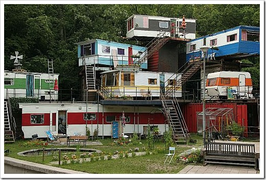
- build your own involves:
- look at your code build guide off that
- don't have to change your code
- More changes to code sniffer to use it, if you even can
- New developers will argue against it
- can be difficult to agree on styles
- or you can → use an existing guide
Style guides
- use an existing guide like pear or zend
- well established
- smart people made them
- code sniffer may already have sniffs
- very explicit
- Your team probably won't agree
- your existing code probably doesn't already follow guide
- So what do you → include in
Style guides
- <?php or <? or <%
- $variableName or $variable_name
- ClassName or Class_Name
- Line length
- Ternary operator
- Documentation
- → include in your guide
- Here's some examples
- Your naming scheme, like underscores vs camelcase
- if you have a soft or hard limit to line length
- tabs versus spaces
- whether to allow the elvis operator (ternary)
- how your code should be documented
- Moving on → to submitting code
Submitting code
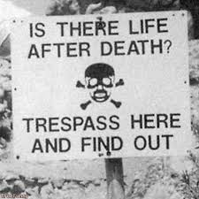
- → to submitting code
- run those automated checks from earlier again
- Good time to run even more checks
- like slow tests, or integration tests
- use repository hooks to make sure unit tests pass
- and that the submitted code has been reviewed
- This is your last chance to keep bad code out
- Then it goes to → continuous build
After submitting
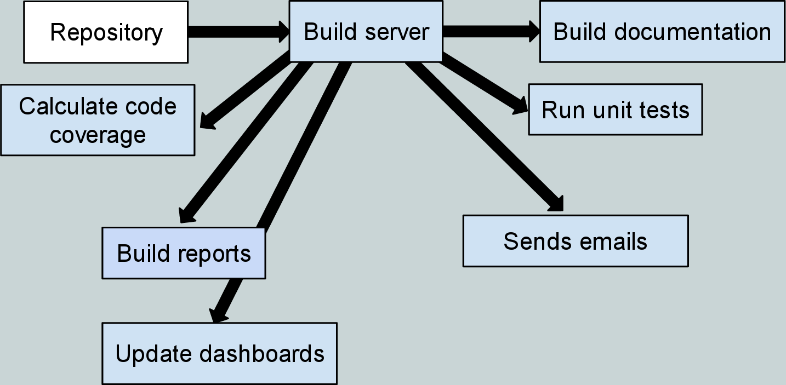
- → continuous build, which
- builds documentation
- runs unit tests
- calculates code coverage
- builds any reports needed
- sends emails
- updates dashboards
- breaking the build → should have
After submitting
- → should have consequences
- like you can't leave until it's fixed
- or you become the build master until someone else breaks it
- this especially is fun if you intentionally hobble the server
- another useful trick in an office is → to make
After submitting
- → to make it very visible
- This is a build orb that glows green or red
- giving a visual indication of the build's health
Omni Adams
@omnicolor
https://joind.in/10548
/